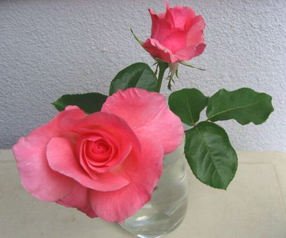

|
| ７月２１日 今日も容赦なく雨が降り続いている、時々小降りになるが又もや激しく降り出し落雷するのでは？と思う炸裂音に見舞われる。 昼、テレビで、衆議院解散、麻生さんの挨拶を見た。世の中どうなるのだろう？期待と不安が頭の中をよぎって往った。新聞の休刊日なので手持無沙汰！といっても大して読む訳でもない。昨日雑記録帳の２９番目を用意した。 これからは自分の日々の記録（今と同じです）になる。思い？ねがいも混めて今の私を書いて行きます。 先日午前来客が二人ありました。何気ない話でも心で受け止めるので、後 疲労が残る事が判りました。 何かやりたいをやるのなら、これからは孤独になる事だと思いました。 老人は交わりの中で穏やかに暮す、賑やかに過すこと、と 言われていますが私の場合は当てはまらないようです。 急に思い立って、先年 ご主人を亡くされた高松の友 Ｙさんに℡を掛け、久しぶりにその後を聞きました。 下肢静脈瘤の為 歩行、日常、等に相当不便を感じて居た様でご主人の勧めもあり、此処数年週２回 の、デイサービスに通って居ました。 水墨画、木彫り、など 手先が器用だった彼女はそのケアハウスですぐに指導的な立場になったようでした。 転勤族で、５０台〜広島在住の折、木彫りを共に習い その後は一緒に輪島塗に凝ったりした年月があります。 私の長男の結婚披露宴に出て頂いた事もありました。 ご主人が退職されて 故郷高松へ帰られ姑さんの最後をみとったという話を聞いたのも 昔です。 娘さん息子さん家族も近くに住まわれています。 電話の声を聞いた時、大きな声で昔の様に明るくはっきりして居るので先ず感動が胸を通り過ぎました。 （２年前にはぼそぼそと小声でした） デイサービスには週２回行き、足は不自由でも杖を使って日常生活は昔に戻りつつあるとの事です。年の所為で身体の老いはどうにもならないが、脳の働きはどうも「昔に戻った感じよ！」 との話に、シナプスがどんどん増えて新しい世界が開いているのだ！と話し、嬉しかった。 「声も大きくて若い日のあの声だわ！」 と伝えた。 デイサービスで自分と会う事を楽しみにしている同年の友もあり、今後も今の暮しを続けるという話だった。 協調性の有る生活を大切にする８０代のＹさん と 自己中心的な暮しを選ぼうとする９０才の私。｛日々を生きる｝ 二人に共通するのはあるがままの自分の体を過去の体験や医療を通し学んだ プラス・マイナス 自分を護る意識に他ならないとおもう。 ７月２０日 海の日と暦にある。 湘南 平塚、大礒。 鎌倉、材木座、逗子と 昔の記憶を辿る。 ニュースで見た由比ヶ浜、稲村ケ崎の風景が懐かしかった。 思い出は年を取らない！ 昨日は胡瓜のピクルスを作った、 今夕は豚肉をフライパンで焼いたり（肉は久しぶりです）人並み以上に時間をかけてゆっくり、一日一食はご飯を食べます。 野菜はミキサードリンク 果物と一緒に、私の健康食です。 昨日から雨、今日は雷鳴、凄い雨が通り過ぎました。 此処は高台なので大きい下水道が有ります。 わが町では、毎年この季節 「ほうずき祭り」が行われるのです、この雨で子供達はがっかりしたでしょう。 町中の通りは車が通れなくなるので私は前日、買い物は済ませましたが、連休は相撲や、見どころ満載のテレビに時を過して居ます。 先夜は、遼さんのゴルフで朝４時まで応援？しました。 |
| ７月１５日 雨が続く、明日も雨の予報だ。 夫の姪が長年送ってくれている
「いきいき」 という雑誌に、先月号は 清川妙さんの人生の試練を軸にして、それを支えた吉田兼好（徒然草）の死生観を一つの物語にした読み応えのある一篇が載っていた。 とても惹かれて、第２回目 ８月号を待った。 ８月号よりー 「徒然草」の中で作者の兼好が何度も何度も繰り返していることがある。 思い立ったら、 時を移さずすぐに行動に移せ、ということだ」 読み進んで行くと「走りて坂をくだる輪のごとくに衰えゆく」 とあります、 この言葉にふれたとき、私は愕然としたが、毎日どうしようかと悩んでいたセントポーリアの処理をし始めた事を良かったとふりかえった。 セントの始末は７月 第一回を読んだ時に実行した。 長年愛しんだ花だったから、行動中、頭の中は真っ白だった、夢中で実行した。 愛を籠めて花を送って下さった方に対して、「時が来ました」 の処理にしても 辛かった。 花を仲間に引き取って貰う事も思ったが、時は夏、ケース内のセントポーリアは疲れ切っている。 つまらぬお喋りは単なる言い訳で、自己嫌悪に陥るのが落ちだろう。 意を決した事はチャンスだったと、今思う。 気が向いて、ある日二階の物置部屋に入って画の整理に掛った。暑い午後で、汗が額縁に落ちるので途中で中止した、 今後の片付ける計画を頭でえがいた。 時は無いのに ともしび程度の意欲は有るようだ！ 整理をしていると心魂籠めて模索した絵は嬉しく見られる。 展覧会が終わった後、理想を追求してか？可能を追いかけてか、手を加えたものが あと味悪く残っている。 どうにもならない。 老いて今、 心に残っているささやかな、望み、ゆめ！はどうなるか？ 老人がこの時代に望、夢などと若者の様な言葉は相応しくない、手っ取り早く やりたい事としよう。 生き物の世話をしたい！ と、先ず思う、９０歳を過ぎ、生き続ける事は大変難しいが、学びの日々は続けたい。失敗の後に得る僅かな満足で良い、喜びを味わいたい。 ３年を目標にバラを選んだ。 観葉植物も幸いにまだ動かせる。 |
| ７月１１日 梅雨はまだ当分続きそうだ。暫くノート日記を書く時間がなく流されて暮した。バラについての反省、出遅れて、やみくも買い漁ったが手入れをしてみると判らぬこと多しだ。 先日来 セントポーリアを片っぱしから（名前が不明）処分した。 道雄の病から始めた花であった。１５年！ 開花まで時間が掛る、その遅々とした時の刻みは祈りの日々であった。 老いて今、手のかかる神経質な花の世話に重荷を感じ始めた。庭の植物、観葉植物と暮そうとするとき、ケースで別居させても病原菌や虫害に悩む事は必至だ。 で、先日意を決してゴミ袋に投じた。後悔はないと己に言い聞かせ、憐れが先立つ中、夢中で半分５０株を処分した。 セントポーリアに感謝したいのは消毒を容易にする習慣がついた事だった。 バラはうどんこ、斑点病など多発する。 こまめに観察し難なく、習慣的に消毒を行って居る。 庭植えのバラは成育が良いが、 無作為に買い、鉢植えにしたバラは細い枝が頼りない。半つる性のものを買ってしまったようだ。 初期スーパーで買った３９８円のバラ達は強い。地植えにした多花性のものは次々花を咲かせる。パパ・メイアン ブルームーン（ＨＴ）の見事な花も良いがスーパーで買ったバラは中々健気だ。 これらは梅雨が明けた時どんな変化が有るだろう？ 昨日 シュートが出たのを見て、細い枝を切り詰め、暗中模索の作業も試みている。 ７月８日 平塚の七夕まつりは綺麗でしょうね！ 昔の梅屋あたりを思い出し想像して居ます。 姪たちともご無沙汰がちです。私は年の割にこんな事が出来るので、まぁまぁの状態が判るでしょう、ただし体力は無くなりました。 週一回くらいの割合で雑記録帳書き込みは続ける予定です。 先日日野原先生がスタジオパークに出演されました。 お元気で良いお話を聞かせて下さいました。 （録画しました） 私もまねごとの様に努力をして暮して居ます。 何かに夢中になる事で一日が終わる、と言うか？ 何をするのにも時間がかかるから、のべつ幕なしに働いて居るように感じるのか？解りませんが、良く働きます。 食後は居眠りをします。 お腹に血液が行くから他の臓器はお休みになるのでしょう。 先月は思いがけない出会いが有りました。 今月は、剛志の結婚式です。 インフルエンザで心配しましたが、家族達は、ハワイに行って居ます。 一昨日 昔懐かしい方達にお会いしました、夕食を御馳走になりましたが皆歯が完全でなくて、笑いながらもお互い健康な今を確かめ合いました。 こうして時は去って行くのでしょうね。 梅雨 小ぶりの合間に崩れた姿のバラ達を切りとったり、（大丈夫）上っ張りと帽子でガードして居ますから・・・ 夜遅く一昨日夕食を楽しんだ茨木の友人から、ふう欄添付のメールが届いた。 あの夜、携帯・メールを交換したのだ。ふうらん、はっきり見てみたいな！ 私のパソコンに転送して見た。壁紙サイズ、光をあびて白い花が可憐だ。 |
| ６月３０日 今日も雨、先日ガソリンスタンドでタイヤの交換を勧められた。ひび割れを指摘された。年数が経っているのだ。全部交換して貰う。どこまで乗れるか？古い車、整備だけは完全にしたい。 眼科受信、涙が出るのが受信理由だったが眼は異常なしだった。（テレビの見過ぎだろう） 探して居た金属製の古い綿棒が見つかったので何年振りかで二日前から鼻の治療をしている。アレルギー、蓄膿症。耳鼻科の治療めいた事を自分で行う。鼻の中が腫れて居るのが判る。後鼻腔まで綿棒が届くので喉を塗る薬液で鼻の中を消毒？沁みてきつい作業だが昔からこれが一番効く。涙眼が止ったのもこの結果かも知れない。 ６月２９日 恵理の誕生日 おめでとう！ パソコンを開ける時間もないほど忙しい恵理ちゃんに携帯でエレンダニカの写真を送った。 広島は大雨です、私は午前中に雨が小止みした時を見計らって、これから咲くバラ達の細枝を固定して廻った。毎日真夏の暑さに花達も日焼けをしたり元気がない。 花は蕾の内に切った方が良さそうだ！つるバラのパーマネント・ウエーブ（手前）二階からデジカメで撮った写真です。 クチナシの時期ですが外出もせず記録帳も停滞気味です。 昨日スカイプで横浜の家族の顔を見ました。洋裁の質問でしたがテレビカメラは優秀な助っ人になってくれて一件落着、和恵さんに”有難う”と携帯メールを貰い役に立ったと嬉しかったです！ スポーツ放送を楽しみにしている初老の友人がカープが負けた三日間を悔しがっていましたが、石川遼君の見事なイーグルに興奮して居ました。 私もテレビで見て居てあの素晴らしい瞬間、声をあげ拍手をして居ました。 その人はカープの試合はテレビが無い日にはラジオで、きっちり最後まで聞くよ！ と、力強いカープ・フアンです。 |
| ６月２５日 真理の誕生日 携帯で祝福♪ 久しく此処の日記を休んだ。 しかしこの間の記録は残したいので書く事にします。偶然にしては出来過ぎた話！？ 神様の思し召しとより他、考えられない事が有りました。 花を求め ネットの中をさまよった女性が何気なく私のホームページに出逢い、フアッション・ショーのページを開きました。 小さい時の記憶が蘇ったのでしょう！その人はあの時の写真を撮ってくれたカメラマンＯさんの娘さんでした。 私の記憶に有るその人は中学生でした（セーラー服）姿の写真が脳裏に焼き付いています。 横浜に住むその人（５４歳）から 電話が有りました。 近々広島に来る事と、ホテルに一泊すると云う知らせと、その後のご家族の様子など、昔の呼び名で、只ただ懐かしく夢中で時の経つのも忘れ話し続けました。 お父さんは５９歳で他界されたそうでした。思い返せば忙しく過ごしたあの当時ショーが終わった後の記憶が定かでないのです。 １９日にご夫妻で我が家へ訪ねて来て下さいました。 この日私はお会いするのは翌２０日と勝手に思い込み、花を求めて外出して居たのです。 暑い日でした、シャッターの前で待っていて下さったお二人にびっくりしました。ご主人が優しく荷物の箱を車から降ろして下さったり家の中が散らかっていたりで慌てました。 でも彼女は昔のままの自然体で気を使う事なく有難かった。 |
| ６月１８日 昼夜逆転した日、夜食は体に悪いとは分かって居てもこう云う日もある、お腹がすいて１１時になって軽い食事を摂った。 今日はセキュリテイの問題でビッグローブに℡をした。メールにセキュリテイ対策の注意が度々入る、誘導に従い調べた結果パソコンを買った時からＮＴＴとノートンがインストールされているらしい。 私がビッグローブのセキュリテイの誘いに申し込んだ為、ややこしくなっている様だ。 パソコンを開けるとセキュリテイが登場し時に何者か？を見つけて削除をしますか？と問い合わせてくる。関係ないか、よく判らないまま削除に踏み切る。と言った状態だった。どちらを如何すべきかを誰かに相談してみようと思って居ます。今日は無沙汰で気になって居る夫の甥や姪に℡をかけた。関東は気象状態がおかしいらしい！家族間の無料電話が多くなったりして電話代節約傾向だけれど、この時代暖かい話し合いが老人どうしには必要だ。 ６月１６日 店に残って居たあじさいを入手した。以前から、真っ白で緑に変化して行く大好きな花でした。バラに夢中で購入する時機を失って（忘れて）居ました。其処は始めての店でしたが、私の思いを感じ取ったか？店の人は”半額にしておきます”と言った。 私は次の年にきっと白い花を見る事が出来ると信じた。 この日の ＮＨＫの園芸の時間でも見た花でした、まだ何処かに有るだろう！ とバラもいっぱい有るらしい噂のお店へ向かったのです。 花を入手するのには時季がとても大事なのですね！ バラも後手ごて、と 出遅れましたが 形にするには３年掛ると言われました。意欲、体力、世相、は！？です。 一生懸命自分を鼓舞して暮して居ますが・・・ |
|  | ５月３０日 クイーン・エリザベスの足もとにシュートが３本出た。日に日に伸びる生育の良さは驚くばかりです。シュートは適当な時期に折って箒の様になるのを防ぐ と、昔の記憶が蘇りました。 エリザベスの咲き始めの姿をここに置きましたが、このあと 夫の写真の脇で２０㎝近くにも開き今日水替えをしようとしたらハラリと二花とも散りました。散る姿が綺麗でした！！長い間楽しみました。 狭い庭で咲く数少ないバラの花を楽しむ為に、切り花にして室内に置き長持ちさせて居ます。いっぺんに咲き極まります。 つるバラの植え込みは無知なため失敗しました。 アーチまで用意しましたが植える時期が遅かったので、アーチの花の夢はかないませんでした。 昨日お客様が有りました、わざわざ会いに来て下さいました。伺ったお話によると 一月に大腿骨骨折と手首の骨折をされて４か月も入院していたとの事、足慣らしに杖をついてお嬢さんに付き添われて来られたのです。 私に近い年齢ですが確りして居らっしゃるので何時も励ましを受けて居ますが、お元気だとばっかり思って居ました。歳月の経つのが余りにも早いので、私は本当にびっくりしました。 豚インフルエンザで世の中が少時麻痺した感じでしたが平静に戻りそうですね！ 昨日国債発行高が示されましたが膨大な金額で不安を感じました。あれこれ次代の人達の事を思いテレビでの世相を眺めつつ今を暮して居ます。 |
| ５月２１日 椿、太郎冠者と孔雀椿の後に陽光があたる空間が出来た。椿は私の大切な家族だったので心が痛み、８センチ位の長さの太郎冠者の切れ端を大切に保存して居る、お守りです。年輪を数えたらたどたどしい切り口で定かではないが１７年位の歳月が感じられた。 少しばかりの其処の空きにバラを植えたり、土の上に直にバラの鉢植えを置いたりして楽しもう！と言う訳です。 最後の暮しの相手に命のあるものを選びました、そう！プチの代りです。 夫の代りにパソコンを選びましたが、振り返るとこの家を建てた頃のあの原点に戻ったみたいです。 消毒や施肥、草取り、季節の剪定等 まだ出来そうですから・・・ スーパーで出会ったバラ達！ ホームセンターで買ってきたバラなど・・・ 昔、３６本のバラを植えて暮した頃が有りました。２階を増築する前にピースを屋根に這わせたりして明け暮れ楽しんだ日々でした。 子供達は東京で大学生活、その代りに此処には犬のティル（ポメラニアン）が居ました。 もう あれから４０年以上が経つているのです。私は９０歳に近く、息子の奥さん達が５０代で家族と共に日夜忙しく暮しているようです。 私の心は今昔に帰り、再びバラを愛でる暮しを選びました。洋裁は最早必要なく衣生活は「ユニクロ」で間に合い、 家族はそれぞれの家庭に治まり孫、子との生活！ そしてテレビで知る世の中は思いがけない事の連続です。長く生きたものです？！ 今日もささやかな幸せ！薔薇の香りを愛でる季節を感謝しましょう。 |
| ５月１２日 亜斗夢の誕生日！ フアックスで祝福をおくる。 私はこのブルームーンを何回 日記に登場させたのだろうか？ 狭い庭には昨年買い求めたブルームーンの鉢植えを加え、３本が次々に咲きはじめた！ 去年、美容院の奥さんに喜ばれたのに気を良くして一番花を届けた。 病院には２番３番切りの蕾を持っていった、連休前だった。 母の日の朝咲き始めた２本を切り、買い物から帰ったら匂いが部屋に溢れて居て興奮した。 全くの自己満足である！！夕方 民生委員さんが訪ねてきて下さった。以前２回も勿忘草や都忘れの花束を頂いた、お蔭で孫の合成写真が出来た、もう数年前になるが・・・今年はお庭のクリスマスローズを切って綺麗にラッピングして持って来て下さった。 私はこの時とばかりに、この二本をプレゼントしたかった。 ドアを開けた途端咲き極まったバラの香りが流れたので 匂いを愛でて下さった、が ご主人が匂いのあるものを好まれない様で辞退された、頂いた蘭の花で懲りられたとか。 クイーンエリザベスの開き始めが一本ピッチャーに有った。 そのクイーンエリザベスは、この家が建った時 植木屋さんが植えたもので４５年昔から在る、椀咲きのピンク、私が一昨年挿し木して今年初めて咲いた花だとお話をした。庭のお日さまを求めてヒヨロヒヨロと背が高い枝さきには未だ２個の蕾が健在だ。挿し木に挑戦してみようとその花は持ち帰られた！ 私の悪い癖、思い込みが激しい事。 こうと思ったら自分を押しつける悪い癖が有る。長い人生で人の良い夫に甘やかされてきている所為か自分が良い！と思ったら相手に押しつける癖が有る。 思えば直したい癖山いっぱい！ 反省しきりです！ 受け止めてくれるのは家族だけにした方が無難のようであります。 |
| ５月９日 今日のニュース、インフルエンザ日本上陸 大阪（高校生二人教師一人）水際対策で判明、これからが心配です？！ ５日のこどもの日 夕方凄い雷雨になりました。テレビでフラワーフェスティバルを観て居た時でしたが雷の余りの激しさに電源を切りました。１００メーター道路の舞台も、会場も大変だったと思います。 最近の気象状態は少しおかしいですね？一時の現象なら良いのですが・・・ ６日の昼 真理ちゃんが友人二人と旅の終りに寄ってくれました。 一時に来て３時半の汽車で帰ると云う慌ただしいお客様でしたが、 私の体を気遣っての配慮なのでしょう。先ず「みっちゃん」から、お好み焼きをとり寄せて女の子３人はおいしそうに食べて居ました。 丁度まる一年前、５月連休に来た恵理達皆で、ロスとの交信中にスカイプがおかしくなりました。（その後、私はアン・インストールした） この度、真理がダウンロード、再設定して行きました。カメラでお昼寝のノアくんや久しぶりのデービットにも会えました。 最後は記念撮影です。 五月の二組の来訪者で 今私は、快い余韻に浸って居ます。 おまけに待ちに待ったバラの季節です！ 咲き始めたブルームーン！ ５月４日 今日の花は昔からあるフロリバンダの黄色のバラ、時間は夕方、暗い和室、照明が６０ワットの電球なので開ききった赤いバラは可哀そうに渋い赤に見えます。 赤も白も一番花で、昨日切りました。 今日午前１０時、剛志と久美子さんが来てくれました。連休、カープの３日間を観に来たのでした。ホテルに泊まり飛行機の往復 大変ですね！？ 出来あがる前から現場を見に行ったりして新球場の出来るのをとても楽しみにしていましたから連休を利用してゆっくり二人で♪ そう♪ 結婚したのです。今日部屋に入ってくるなり堂々と 「僕の奥さんです」と、紹介されました。 （もう何回も来て居るのに・・・） ２時間余りの時間でしたが彼の運転で仏舎利へ行って瀬戸内の写真を撮ったりした後 球場まで行き、お別れをしましたが楽しかった！ 運転する剛志にうっかり 道雄と呼びかける位声が似て居ました。 久美子さんには台所でコーヒーを入れて貰ったりして甘えました。 私は最近動作が鈍くなり、何をするにも以前の２倍３倍も時間がかかります、転ぶと大変な事になるのであるがままで付き合って貰いました。 今までは喋らなかった剛志がよく話をし、久美子さんが静かで優しくて幸せでした。 |
| ５月２日 この花はヘリオトロープ 顔を近づけて眼を閉じると、昔々始めてこの花に出会った頃に記憶が戻ります。矢板に家を建て庭を作り始めた頃、まっ白いシャスターデージーをいっぱい咲かせました。ヘリオトロープはサカタのタネから送って貰い育てました。香水など田舎暮らしでは夢でしたから匂う花は貴重でした。 その後、広島に来てからも中央公園で植物祭りで手に入れました 花はうまく開かず、咲かずじまいで終わりました。今回は、クリスマスローズを入手した時にダイキで出会ったのです。 全ての鉢の葉が病気になって居ましたが、私はあえて挑戦してみようと思い、一鉢（小）¥７８０で買いました。植え替えて、消毒し、悪い葉を様子を見ては少しづつ取り除き、寒い日や夜は家の中に入れるなど、細心の注意をしました。ようよう季節が巡って来て この段階に達したと云う訳で、諦めないで時を紡いだ日々に満足して居ます。 白いバラと並べると矢板での、シャスターデージーの白と重なり感傷的になって居ます。 植物は病気、虫、に注意して根気よく育てなければ良い結果に会えません。これからは毛虫の時期になりますから注意して暮しましょう。 先日、”ムカデ”が足の上を這って移動しました。くすぐったいので気が付きましたが震えあがりました。 ２０㎝位長さが有りアースを持って追いかけ追い詰め履物で叩いて下水に落としましたが、勇気が要りました。何処から上がって来たのでしょう？ 以前、蛇の時はプチが護ってくれましたが心細い限りです。 |
| ４月３０日 朝８時のアラームでようよう起きようかな！ と思う。もう少し意欲的に暮したいのに一日の後半に活力が出てくる習慣が癖になった。 昔と違って一日の実働時間が短い。 今の季節は植物の世話を主に暮して居るので起きて一番の仕事は水遣りです。 身の回りの事を済ませると１０時、丁度太陽の光が庭に届く時間と合致。今日は観葉植物を玄関先に出しました。 大きいモンステラはまだ室内です。 昨夜 携帯電話の説明書を読んでいたら面白くて夜中になって居ました。子供や若い人は指先でいじるだけでパッパッと何でも出来るのに？！ でも考えたら今位の利用度で事足りて居ると、後追いはしない事にしました。 デジカメは課題がいっぱいです。今夜も遅く庭の諸々を撮りましたが、此処に載せる画像は出来ませんでした。デジカメも本式に習わないとだめかも？と思いました、要するに時間が掛るようになったのです。 バラを育てるにしても消毒、肥料など、日々の管理が大切な事を知りました。こうして此処に書いてみますと早起きの習慣を身につけなさい。と答えが出てきます。体力が乏しくなったので暮しの中の何を省き、何に重点を置くか？をよく考えましょう！ ４月２４日 寒い一日でした。雨が降ったので庭の水やりをしないで済みますが、エアコンや床暖房で暖をとったり冷えないようにして終日を過しました。 昨日は先日訪ねた東雲のＭＥさんの写真が出来たので午後、庭のスズランや赤いアネモネ、クリスマスローズのグリーン花等を携えて車で出かけました。 あっという間に左折場所を通り越してしまい、 ガソリンスタンドで給油を兼ねて道を尋ねました。 運が悪い時はすべてが”マイナス”になるものですね！ 言われた道は結局、右折が出来なくて元来た所まで後戻り、 ままよ！？ と、懐かしい大学病院構内まで入ってから携帯をかけて昔よく辿った道を聞きました。 あの界隈はすっかり変わって私では無理と判断され、ＭＥさんの息子さんが自転車で荷物を取りに来てくれました。 帰途は標識に頼り、廣島駅を目指して走りました。 時々斯うして出かける事も必要だな！と前向きに思いました。 広い道は解りやすい大きな標識が方向を示し、安心して運転できます。 千葉の甥が昇天しました、夜遅く まゆみさんに通夜の話を聞きました。 切ない思いで頭がおかしくなっています。 彼の越しかたを偲びました。 私たち、兄妹夫婦７人を大型の外車に乗せて和歌山の温泉に旅させてくれたあの昔の日を思い出します。 宿の浴衣に丹前姿で皆で笑い興じて居る写真が有りますが、私は末っ子で３０年も前の事です。 夫の葬儀にも来てくれましたが、帰る前にこの部屋で 「おばさんが教えてくれた体操を今もやって居るよ！」 と、くにゃくにゃと身体をちじめる体操を演じて見せてくれました。 |
| ４月２１日 忙しさが私を追いかけてくる！？ これは、二階から庭を見下ろして撮った写真です。更新の良い材料が無いので、サンゴもみじ 鴫立つ沢（青しだれ） ボタン あせびなど最近の定まらない気温の季節に おたおたしながら４月１９日に撮ったものです。 暑い日にはボタンにビーチパラソルを覆いました（３日間） 今年、ピンクの花も一つ咲きましたが、新生の一本なので、背が低いのです、葉に隠れて居ます。暑さの所為と夜降った雨で、形が崩れたので写真は撮りませんでした。 雨の前に白花を２本を切り、ご近所の方に貰って頂きました。 金曜日、スーパー店頭のバラが可愛いので又３本買い、鉢植えに二株、地に一本を植えました。 バラは、茎蜂を見張って居た２〜３日の間に柔らかい”つぼみ”を、虫に３個も貫通食されていました。早速消毒をし、５枚葉まで切り落としましたが、何を手掛けても気が休まる暇は有りません！身体を動かすのには丁度良いタイミングですが・・・ 「命の管理」 プチ亡きあと、植物にターゲットをしぼりましたが、植物の管理も並大抵ではありません。 季節的にもクリスマスローズはぼつぼつ夏の管理に移行するため、裏庭に移動しました。 始めての鉢植えの夏管理なので、消毒なども含めて慎重です。 最近のように気温の変動が激しいと例年どおり！では収まりません。 室内のセントポーリアは外の植物とは別に作業しないと病気になりやすいので、上っ張りを着たり、手を洗ったり、神経を使います。 生きたものと付き合うのは大変です！ |
|
| ４月 １５日 先日買ったバラの一本です。こんなに小さい木なのです、雨の上がった朝撮ったので露が光って居ますでしょう。 花色が順に変わる？と、名札に書いてありました。オレンジめいた色でしたが！？ 何しろ¥３９８円・・・鉢植えのもう一本は香りが良いのですが 茎はこの方が頑健そうでした。 庭は今ほうちゃくそう や、タイツリソウ えびね つつじが顔を見せ始めて居ます。散歩代わりの庭仕事を楽しんでいます。 昔、バラが蕾を持ち始める頃になると 茎蜂が飛んできて花首をチクリ刺し、その蕾はうな垂れて咲かず仕舞いで終りました。 毒がまわるとか？ 見つけたら早々に茎を切り捨てました。 良いつぼみに限ってやられてしまうのです。 午前１０時頃の、うっとりするような春の陽気は要注意でした。 あの思い出は切ないです。で 今日は何回も覗きました、 番人作業に徹しましたが最近の陽気はあの昔の うっとりする春らしい雰囲気とはちょっと違いますね！ 暑い感じ？だったり うすら寒かったりで、茶色の茎蜂も出番が狂って居るのでしょうか？今年 ブルームーンは肥料が効いたのか茎に全て蕾が付いています。つらつら思いみるに今までは今年みたいに忠実に水肥えを与えませんでした。 ４月１７日 スーパーに花の苗が来る日なので、バラの苗を目当てに１０時過ぎに覗いて見た。 あった！いろいろ春の花 いっぱい。シャクナゲの良い株を初老の老人が抱えてレジへ、バラは先日よりも優秀なのが来ている、色もさまざま 確りした株立ちだ！ 値段は¥３９８・・・安い！ あれこれ迷いながら又、３鉢を選んで買い求めた。狭い庭は何とかしょう！？ てな訳で、その日の内に２本は素焼鉢に植えた。 後はつるバラなので植える場所を考える時間に２日掛った （ビニール鉢で乾燥に耐えて居るかに見える） 昨２１日、夜から雨？の予報に今が植え時とばかり懐中電灯を使いながら庭に地植えをした。 （つるバラ名パーマネント・ウエーブ） ４月２２日バラ日記を続けて記す。ブルームーンの葉が病気のようだ？クイーンエリザベス等も怪しい、夕方消毒を施す。 他の落葉に見る類の斑点に似た症状だ、有り合わせの薬を撒いてみた。 |
＝つづき 今日早めにスーパーへ行くと、草花がいっぱい入荷して居た。なかにＨＴのバラが有った。花つき¥３９８、強香四季咲き、と値段が安いのが気に入って買いました。 バラの土を買いにダイキまで走り帰宅早々暗くなるまで植え替えをしました。一本は、庭に３本鍬やシャベルで深い穴を掘り、牛糞、腐葉土，くんたんを深く置きバラの土で植えました。 蕾の付いた一本立ちの小さい苗です。 一本は鉢植え 「ラ・フランス」 今成育が盛んなブラック・テイも ¥３９８で一昨年買って植えたのでした。この他、ブルームーンは昨年末、大苗を購入、鉢植えにしてあります、ブルームーンは計３本になりました。成育良好です。残り少ない人生、バラに出会うために、心を鬼にして可愛い椿を切って陽あたりを作ったのです。上手くゆくと良いのですがね！ 楽しみです。 |
４月１０日 天皇陛下、皇后陛下、結婚５０周年 おめでとうございます。 カープ 新球場オープン！第一回戦 中日が勝った。カープの地元だから相手にはなを持たせたのかしら？ これから始まる戦い、焦るな！ 新球場に慣れない面もあるのでしょうかね？！ それにしても阪神の金本は良く打ちますね、昨日の新聞に本音の書き込みが有り、共感を抱きました。 ＝つづく ４月８日 近所の家の解体が１日から始まって居たが今日全て済んだようで更地になりました、新しく建て替えです。 私は先日から草取りで働きすぎた所為か筋肉痛がひどく腰が伸びにくい、此処で横になって休んだらいけないのです。ちょっと休憩し、あれこれ軽い作業をしたりして身体を調整します。その後、入浴。昨日頂いた薬をゆっくり顔や足に塗って終了！ 夕方です。 何か食べる時間 です。先日「試して合点」で、ホットケーキをふっくら焼いていました。説明書通りにやれば出来ると言う事でした。 家にもホットケーキミックスが残っていたな、チャレンジしてみよう！と、「卵一個、牛乳１４０mｌ、ホットケーキミックス２００ｇ、を用意し、箱書きの「作り方」通りを、砂時計を利用して焼いてみました。 ふっくらした３枚のケーキが出来上がりました。以前作った時とは厚みが違います！ メープルシロップは無いので「はちみつ」と紅茶で満腹になりました。残りは冷凍です。 鉢植えのクリスマスローズが急に気温が高くなり、日射しが強くなった、新葉がぐったりしているので玄関や裏庭に置き場を替えました。 サンゴモミジの新芽の赤 えびね ボタンの蕾 タイツリソウ など、庭は心を癒してくれます。アネモネも赤とブルーが元気 椿は咲きこぼれています。 日に何回庭を眺める事でしょう。今年はテレビでお花見もいっぱい出来ました。花見見物すると必ず疲労が出ます（年のせいです） テレビで俯瞰した千鳥が淵のさくらはすてきでしたね。 ４月７日 サクラソウ（マラコイデス）には気をつけましょう！ 今日 私は遂に皮膚科の女医先生にお世話になりました。 サクラソウの”鶯白花”は別鉢に植えてありますが、厚みのある綺麗な白なので種を取りたいと、秘かに夢見て居ました。 それが、咲く花に薄いピンクが混ざり始めたのです。毎日観察してはかすかに色ずいた薄ピンクの花を摘み取って居ました、無意識に過した一週間の後まさかの出来事？（もの）でした。夜中に無意識に掻いて、とがめたのでしょうね？ 膿をもった吹き出物になってしまったのです。 足の指にも問題が有りました、満身創痍の私でした。何十年も構わずに暮して居ましたから気にも留めていませんでしたが、全部の処置を看護婦さんが丁寧にして下さって、それぞれのお薬が出ました。 |
| ４月１日 ３月２９日 キャットショーを見に行きました。審査員のＹさんから１月に聞いていた催しものでした。猫を家族として大切にしている方が集まるのだろう！と軽く考えて覗きました。 審査長のＹさんは外国にも審査員として行かれるそうです。左の方は、５人の審査員の一人です。 右の方は横川で”猫喫茶”を経営して居られるとか？ 色々な猫が居ましたが皆もの静かでした！ 最終審査までには時間がかかりそうなので写真をいっぱい撮ってひきあげました。 産業会館を出ると２号線、左に折れると東雲 もう１０年余り会って居ないＭさんのお宅が近い！ 急に顔だけ見たいと携帯電話をかけました。 ２号線は今は横断歩道の代りに陸橋が掛っていて昔海田や呉まで走った頃とすっかり変わっていました。 迎えに出てくれたＭさんは昔のままでした。 ８７歳 誘いにのってお宅までお邪魔し色々思い出話に花が咲きました。退職されたご子息が写真を撮って、すぐに手渡して下さるという手際の良さにびっくり！何不自由なく暮して居るＭさんをちょっと羨ましく感じました。 Ｍさんには道雄と「舟入高校同級生」の娘さんが千葉に居られるのです。 Ｍさんは広島と千葉とを行ったり来たりして心豊かに暮しているようでした。 いっぱい本音の話をして帰途につきました。 暮れ方でしたが２０分で我が家に着きました。 年賀状だけの便りで続いた１０年余りでしたが頭も確りしているＭさんに会えて幸せでした。 |
| ３月２６日 時は公私にかかわりなく歴史をつくる。ＷＢＣで興奮したのは昨日、昨日は私の５人目の孫が早稲田大学を卒業した。（早稲田は、生存ならば６２歳の次男の母校です） 孫（長男の息子）は叔父さんの大学に入ると言って一浪して、何とか入り、今年ようよう卒業、就職も決まって居ます。 今日電話で久しぶりに声を聞きました。祝福の手紙に ”早稲田大学卒業おめでとう”と、書いて私はしみじみ自分の人生を振り返りました。 私の兄は大隈重信候の書生として大隈邸に住みこみ、息子さんの学友として早稲田に通ったと聞いています。この兄が年の離れた末っ子の私に対して、躾が厳しく、家に帰った時は箸の上げ下ろしにも注意をされた記憶が有ります。 道雄の入学式にお父さんと、林の兄上と、三人で重信候の銅像の前で写真を撮ったりした記憶まで思い出されました。 さて、此処からは今日の話になります。 ３年前白内障で一緒に手術をした６０代の若い友人が先日、私の家に来た折の事です。台所のデスクトップに入って居る（ＣＤ）でかけた 「ホークソング集」 から ”さだまさし”の精霊流しの曲が流れました。 とたんに彼女の目から涙が溢れました。 ご主人が昇天されて３年位になります。 彼女の青春の思い出でも有るのでしょう 私は純粋な人柄に胸がきゅ〜んとなりました。 パソコンを勉強したいと言い 自分に合うパソコン探しを始められました、昨日設定が済んだことを携帯で知りました。今日午後パソコンが点かないと℡を貰います。 たまたま買物に出る前でしたから ついでに寄る事にしました。彼女の家は初めてなので、心細い私は買い物先のスーパーまで来て貰いました。若い人なのでテキパキと事は運びましたが、肝心のパソコンは、電源を入れても真っ黒なのです。 結局のところ電池ははずして仕舞い込んでありました。 それにしても 電池がない事に気付かない私は、本当にボケたものだと情けなかったです。 電気屋さんに携帯で電話して指摘され気が付きました。 私の携帯から彼女のパソコンにメールを送り、私のメールが届き、確認したりの作業で終りました。 パソコンを買った業者は一年間無料指導してくれるらしいので予約を取って明日から勉強に通うとの話でした。パソコンは時間をかけて学ぶもの、せいぜいメールを送り励ましましょう。 ３月２０日 昼前 横浜、千葉、平塚に℡しました。 孫、息子、姪です。明日21日は、お父さんの（生存ならば91歳）誕生日です。 昨夜は雨の音がしましたし、今朝は突風が吹きましたが、午後にはすっかり晴れて お彼岸らしい上天気です。「ＷＢＣ」が気になってお山参りが遅れました。 日本が有利になった8回を観た後、お山行きを実行！しました。 お父さんはジャイアンツびいきで 原が大好きでしたから喜ぶでしょうね、報告をしてきました。 広島は暖か過ぎる位の気温です。最近は日記に書く事が少なくなりました。週一回位になりそうです。 テレビの話題ぐらい位ですね、昨夜は徹子さんの出演する番組で「女たちの中国」〜特別編で現在の李香蘭にあいました。（89歳） その他 近代の歴史に残る出来事等 昔の思い出を辿り、しみじみと振り返りました。 書く事が無いのでご存知の方があるかも知れませんが生活の知恵、ヒントを一つ 先日、テレビでおいしいご飯が炊ける炊飯器の宣伝？とも思える放送が有りました。皆高くて10万円近い値段の物も有りました。すぐ後から、同じように美味しく炊ける方法の伝授が有りました。 昔から言われる「始めちょろちょろ、なかぱっぱっ、赤子泣いても蓋取るな・・・」 そう、お釜で炊く御飯のコツです、あの美味しさが実現出来る！と云うのです。 友人にも言って私も試しました。 1日１食がお米利用の暮しなので、今日まで２回炊きました。 確かに美味しいです ☆☆☆ で、その方法とは？ 何時ものようにお米をといで少し時間を置き、スイッチを入れる直前 冷蔵庫の氷を、米一合につき一個（３合なら３個）入れる。 只それだけです。 やってみました。今夜が２回目でした。 甥が送ってくれたお米は美味しいのですが、２回とも より美味しく炊けました。 私はご飯を小分けして冷凍保存し、電子レンジでチンして食べますが、変わりなく美味です。お試しあれ！ 3月19日 お彼岸です、久しぶりで蓮照寺に伺ってみました、曇り空のもと、優しいピンクのしだれ桜が美しい姿を見せてくれました。 サンシュユの黄色も綺麗！、白もくれん、椿、 等など 春は急ぎ足です 思いがけない収穫でした。 しかし私はアレルギーか風邪か頭がフラフラして困って居ます。 明日はお父さんのお山に行ってお喋りをして来ましょう。 報告したい事も溜まりました。 |
| 3月12日 昨夜遅くなってセントポーリアの部分的消毒をした。6鉢を新しいフラコンケースに入れて玄関のワーディアンケースに収めた、寝るのが又夜中になった。 先日来 私はサクラソウ（マラコイデス） の花粉にやられたらしく顔が痒くって困って居ます。ＴＧさんに花粉症！ と指摘されるまで原因不明でした。でも、懲りずに庭の仕事は一番に行います。 今 沈丁花が咲き、あせびの蕾の白い色が目立ち始めた少し冷たい春の空気の中で クリスマスローズやバラに水やりをします。 それから新聞を読みながらブランチをゆっくり摂ると昼になってしまいます。 昨日 雑誌が届きました、 庭を訪ねて １・英国のベス・チャトーさんの庭 から始まって本一冊のあらましに目を通していて、辺りが暗くなってはっと我にかえりました。 文芸春秋も、色々な方に出会えるので楽しみです。 先日 ＮＨＫで「白州次郎」の2回目の放送が有りました。終戦時の事は生きる事に必死でしたから、今あらためて知る事が有り、事実に基づいたフィクションとしてのドラマで当時の事を思い起しています。 劇中 雨に濡れ、正子を背負って歩きながら 「貴女はライバルとして必要だ」 と言った次郎のあの場面をもう一回見たいと観終わった後で思いました。 それぞれ魅力的な素晴らしい生き方をされていますから時間があれば本も読みたいです。 3月6日 病院行き。2か月に一回薬を頂ける日だ、患者さんが少なくて幸せした、Ｎ先生に最近の私の暮しを聞いて頂いた。 夜 何でも言える75歳の友人と℡で話す、創作意欲が満ちている彼女の話に私は自分を振り返り 電話を切った後 日々の暮しに汲々としている自分を 「老いたものだ」と淋しく思った。その後何気なくつけたテレビで 「ラン・ラン」の ピアノを聴いた、観た と言った方が正しいかも、バルトークの力ずよい表現 ドビュッシーの曲には思いが籠められているように感じられた、 亜麻色の髪の乙女（懐かしかった）そして最後にショパン、躍動的なポロネーズだった。 最近の音楽情報など何も知らない私は ネットで調べて見て、少し解った。何と言っても素敵な出会いだったと感謝したい。生きて居るのも悪くはない！ を思いました。 昔むかしの話です。友人に、ピアニストご夫妻が居ました。 御存命かもしれませんが？私より少し高齢です。 60代に、御子息がドイツに留学、指揮者になる夢を抱いて居られました。ご無沙汰して残念ながら今、ご家族が如何して居られるか判りません。中村紘子さん、宮沢明子さんのピアノ評などよく伺った記憶が有ります。 あの頃は感情を込めた演奏を否定して居られたように記憶しています。で、昨夜はそのＴ先生ご夫妻を思い出しました。 あれから30年近い歳月が横たわって居ますが、お付き合いが有れば今！を語り合いたいとしみじみ思いました。 私の洋裁教室にも来られ、ひつじ屋で買われた”ランバン”のコートの袖つけを直したり、日本画も少しの間習われたりと、思い出が広がります。 3月4日 この所毎日の 「ノート日記」 も書く時間がなく 一日が終わって行く。（テレビは見る時間が有るのに？） 動作がゆっくりになった事は老人を自覚して居る証拠だと認め、流されています。 しかし食事、植物の世話、などで日が暮れ 日記を書く時間がなく、夜中になる。 ノート日記は記憶を振り返られるから大切なので、今夜あたり記憶を辿って4日分を書こうと思って居ます。 此処にはあたりさわりの無い、しかし 如何に暮しているかを記さなければならない。 失敗の報告は一番に書きます。 下のクリスマスローズは今年購入したものです。 冬の花 クリスマスローズ 昔 地に植えた4本は今開き始めて元気です。 春はバラが楽しみです！ 光が少ない我が家で咲くかしら？！ 心が痛かったけれど 太郎冠者、孔雀椿と 古い木を 2本 切ってお別れをしましたから陽光がいくらか射すでしょう。 今年は 鉢植え苗に冬間から液肥を与えて期待しています。 それにしても私自身の身体がもつか、問題です。 今から寒いさむい次の冬を心配しています、冬は穴熊になりたい心境です。 |
クリスマスローズ 購入時の姿です。
↓
 |
２月１７日 春を待つ毎日、穏やかな日には顔を揃えて咲き始めたマラコイデス、アネモネなど草花に心が潤う、クリスマスローズは土から顔を持ち上げ寒さに向かって健気だ。寒く冷たい風が吹く日は暖房を利用して何かと、付き合い、時間を過す。新聞や雑誌を丹念に読んだりする事が多い。今はテレビが隙間を埋めてくれるが昔人間はぼけ〜っと過すのは飽き足らない！ 車をメンテナンスに出して二日目 暖かさに誘われて徒歩で何処まで往復出来るか試してみた。帰りは困ればタクシー券が有るし、と ゆっくり確かに歩いた。まず郵便局へ寄り預金の残高明細を得た。それからドラックストアーに行く、此処で何を買うのかが思い出せず、二階の食品売り場に上がり、今夕用のささやかな買い物を済ませた。 ゆっくり歩いた、犬を連れて歩く人が多い、話しかけて犬の名前を聞いた、薄紫グレイの綺麗な艶やかな毛並み、名前はセブンちゃんだそうで犬の種類は図鑑で見たらシュナウザー系の様だ。携帯で撮ってパソコンに送り、画像を見る！ 帰途近くのスーパーの駐車場で白い犬がお買い物が終るまで柵に繋がれているのも撮った。 犬は良いなぁ！！ 最後にセブンイレブンに寄る、友人から植物性ヨーグルトを勧められて愛用している！ 家に戻ったら、彼方此方へ寄って約２時間近くが過ぎて居た。何となく心身ともに軽やかだった。 結構歩ける！ と嬉しかった。 実は2週間前近くのスーパーでバックの折コツンと他所の車にぶつかった。真っ暗な駐車場は後から後から大型車が続き、「早く出ろ」 と、声をかけられ睨まれて慌てた。以前は煌々と屋根にオレンジ色の灯が照らしていた駐車場は最近、省エネでか？電燈が点いていない、ヘッドライトだけが目を剥いている。大型車は何台も続き、私は仕方なくそのまま家に帰った。その晩は辛い思いで祈りに終わり、翌日保険屋さんに℡して聞いてみた。 翌朝一応店長に話し、申し出でが有ったら連絡をして下さいと頼んだ。駐車場の事故は多いらしい、お互い様的な話を聞いた。 私の車は後のライトがちょっと壊れて居たので、大きい車のバンバにでもぶつかったのかも知れないと心を落ち着かせた。 夕方から夜にかけては車には乗れないと覚悟をした。 車は家族などといい気になるな危険と背中合わせだぞ！ を学びました。 歩けば又違ったものが得られるので両方を大切に使って暮らそうと考えて居ます。 家に帰り上着を脱いでドラッグストアーでの買い物を思い出した。 お腹と腰に貼るカイロでした。 ゆっくり心を落ち着けて暮しましょう。 |
| ２月８日 冬は冬眠して居たい 熊のように と、思う毎日です。 ベランダで「金のなる木」が花盛りになった！と友人から電話が有り出かけました。南向きの高層住宅は春の光が豊かでした。ゆっくり時を過し帰路、家に近くの友の応接間に電気が点いていたので顔を見たくて何時ものようにチャイムを押しました。 独り暮し同士の気安さでつい上がり込み、おいしいコーヒーを頂きながら、お互いの失敗談などで笑い興じて居た時、荒々しく玄関と応接間のドアが開きました。私達はびっくりしました。 「どうしたの電話を何回掛けても通じないから・・・」 と、美しい中年のご婦人が言いました息が弾んでいます。 息子さんのお嫁さんでした。 皆で調べたところ元の電話の受話器が外れて居ました。 そう云えばいつも夕方にはお母さんに℡を掛けてこられる習慣があったのです。外はもう真っ暗でした。お仕事が有るのですぐに帰られましたが、私は反省！しきり、でした。 ２月１日 別府大分マラソンを見ながら・・・ この数日風邪の症状で頭が重いので静かに暮して居た。 宇都宮の亮ちゃんから例年のとちおとめ（苺）が送られて来た。℡で奥さんと話す。 このバラは先月ホームセンターで出会った花、寒い季節、細い枝さきに健気に咲く姿に心打たれ入手した。 昨日は雨だった、春になるには三寒四温の季節がある、今がそのときか？ 雲間からひかりが洩れて室温は17度、久しぶりの朝風呂に入り髪を洗ってさっぱりしました。 午後車で少し離れたスーパーへ、食糧買出しです。そこのスーパーでジュース用の人参と名ずけて可愛い人参の束が有りました。 最近は毎日ドリンクを作らず気が向いたときに作ります。セロリ、トマト、バナナ、リンゴ等など結構な量になります。自然に欲しくなった時に作り、食事代わりに飲みます。 パンかクラッカーなども少し食べたりしますが、今日は魚や地物の野菜も入手できました。 |
| １月２６日 １０日間書き込みを休みました。最近はノート日記を書いています。 寒い寒中ですね、今年は実に寒く、やはり灯油暖房の方が温かいと過去を振り返りますがこの寒さが以前より強いのかも知れません。１０日間 今年はテレビで相撲を真剣に見ました。それと土仕事を少しこなしました。庭を少し変えようと思います。で、三本鍬で土の天地返しをして寒さにあわせて居ます。草がいっぱいでしたがどうなりますか？良い運動になりました。 花の咲く庭は無理ですがクリスマスローズは大丈夫と思います。最後の楽しみにと小苗を混ぜて数本買い求め、まず素焼き鉢に植えました。昨日ホームセンターで講習が有り、福島の大森プランツから来られた指導員の方にアドバイスを受けました。 今日作業が大方終りました。クリスマスローズの根は下に伸びるそうで、縦長の鉢を勧められました。うまくゆくとダブルの花が咲くかも知れません、今は小さい苗ですが・・・ １月１６日 昨日は春の花達と出会った！ 主に心ときめいたのは蘭たちでした。オンシジュームやデンドロビューム、シンビジューム等など見事な顔形に魅せられました。空気も新鮮に感じられてマスクなど必要なしでした。 片隅のアネモネが気に入って買いました、当初は絵を描く積りでしたが写真を撮っても今のところ鉛筆を持つことはなさそうでです。 庭仕事、（草取り、施肥）が山積しています。春前にしなければならない作業は体の為にも大切ですから優先しましょう。 一週間前、友人からほくろの事で℡が有りました。 誰しも 年を重ねるといろいろ気になるのですね？ |
| １月１３日 １１日は午後からセントポーリアの消毒を始め夜遅くまで掛った。今日見ると結果は良好のようだ。 １２日は昨年秋、見学でお世話になった施設の方に、あの時の写真を送る作業等に時を費やした。 夫の甥から送られたメール添付の写真も印刷し、宇都宮に住む姪と甥にそれぞれ送るようにした。 セントポーリア仲間に去年苗を分けた（リンダ・ダーネルＴＲ）の花の写真もはがきに刷ったり、今朝は早起きをして、朝一番でポストに落としてきた。この１５日が誕生日で還暦を迎える若い友人が居る。 最近はメールであっさりやり取りをしていたがバラとセントポーリアの写真をカード代わりに入れて 「１５日開封」 としてこれも昨日出しておいた。 いっぺんに８通の便りを出した。 一日中印刷と添え書きで何となく満足したけれど、実のところ とても時間が掛り、間違いが無いようにと気配りで疲れた。 薔薇 ブラックティ の雨露をとどめた顔の写真の背景をぼかして２Ｌに印刷、肉厚のこの花は、ブルームーンと又違った懐かしさが有る。 昔、そう私が６０歳ころ 「チチヤス乳業」 のバラ園が見事だった。写生によく通った、自分で作った（バラ）を一枝出品したりして催しに参加した事もある、ブラックティだった。 雨の後、スケッチに行き、雨で大きなバラの花が惜し気もなくどんどん切られる時に偶然で合った、車に濡れた大きなバラを山ほど頂いて帰路、松山さんに沢山！置いてきた事が有った。彼女は油絵、感動して赤いバラを即座に６号に描いたそうだ。 ご主人はピアノの調律師として有名だった、その赤いバラの絵はご主人が乾く間もなく音楽家の何方かにプレゼントされたとか、後年、彼女は残念がって居た。素晴らしかったと思う！匂いの溢れるバラ園！美しい思い出は今も脳裏にやきついている。 |
１月１０日 昨日腸の検査が済みました。大げさにおむつまで準備しましたが無事に済み一安心です。年齢的に付き添いが必要だと感じました。でも、もうこれで終わりにしましょう！ その二日前から風邪気味でした、食欲がなく不具合な義歯の所為かとも考えましたが検査前日には体力がなく不安で、検査の中止を申し込もうかと、何度も迷いました。 プレッシャーがプラスされているのだと自分に言い聞かせたりもしました。 ２〜３日まともに食事をとって居なかったので、当日はやはり衰弱気味だったらしく検査の途中で点滴など迷惑をかけたようです。高齢になると便秘になりがちですが、私の場合もそれでした、先生はポリープを心配されたようです。 これからは食生活、運動など日常にもっと気をつけて暮したいと思います。 今夕新年始めての買い物にスーパーへ行き、野菜等、食料品を買い求め、早速きんぴら牛蒡やほうれん草のおひたし、鯵の塩焼きなどの夕食を摂りました。 体操代わりに台所の雑巾がけなど、結構前向きに頑張って居ます.。 |
| １月５日 朝寝坊をする。アラームは６、７、８、９、と４回鳴るけれど一回目はまだ６時だと聞き流す。８時はもう目が覚めて居る、が省エネを考えて暖かい寝床で聞き流す。うっかりすると１０時まで布団の中で過去の記憶の反芻に時を費やしている。 携帯を開き、時間を見て階下に降り門灯？を消す。植物家族達の寒さ除けの諸々を取り除きカーテンを開ける。水道をひねり管に溜まった水を流し、夫に声をかけて今日が始まる。手慣れて居るのでこれらは速やかに終わる。 冬はこれで良いと私流です。あとひと月かな！ 朝食は野菜、果物のドリンク主体（パン・クラッカー）と、お粥、味噌汁とを朝の気分で交替に摂ります。ブランチが終るのはかれこれ昼近い。 今年は賀状が７０通届いた、頂いた順に枚数を印刷し、表書き（宛名）は筆ペンで書いた。９０才、記念すべき年なので ０８年５月に撮った植物家族と共に（日記にもある）を使った、Ｔシャツ姿です。洋裁、コーラス、セントポーリア仲間、知人、親戚など・・・牛さんは確り脳裏に収まりました。 まぁ今年辺りが山でしょうか？ 1月３日 皆様新しい年の日々を如何おすごしでいらっしゃいますか。 今日午後３時ころ、表駅前の郵便局に賀状を出しに参りましたが、此処の近くの東照宮の参拝の車や参拝者の群れが、長く続いていました。何時もの年より多い感じでした。 |
{kind=link}
{kind=link}